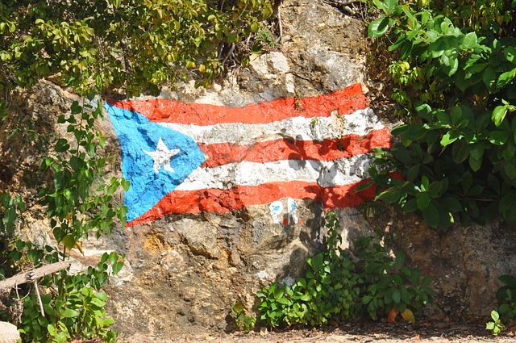

Puerto Rico is an island, located northeast of the Caribbean Sea. It's an uncorporated territory of the U.S. San Juan is it's largets city and capital. I don't have a specific place that i would like to visit, I think the whole country is breathtaking.
I learned a few interesting facts about Puerto Rico. Casa Bacardi is the larget rum distillery in the world, located in Castano,Puerto Rico. Has it's own "Galapagos Island" called Mona Island. It's named after it's colony of Mona Iguanas.
